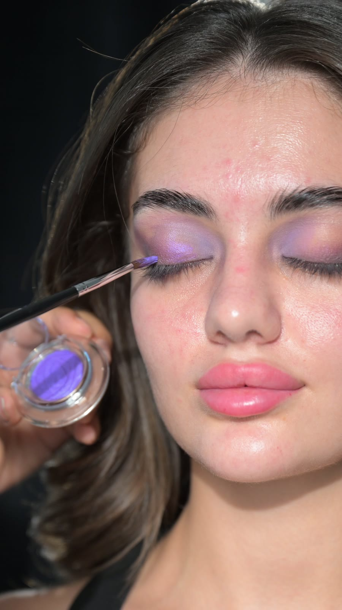

المكياج مو فلتر… بشرتك جزء من النتيجة

من أكثر الأشياء اللي أحب تكون واضحة قبل الموعد إن المكياج يقدر يغيّر أشياء كثيرة، لكن مو كل شيء.
بالألوان أقدر أوحد لون البشرة، أصحح التصبغات، أخفف الاحمرار وأغطي لون الحبوب والهالات بشكل كبير. لكن المكياج ما يقدر يلغي ملمس البشرة.
إذا فيه حبة بارزة، أقدر أخفي لونها لكن ما أقدر أخفي بروزها. الحفر والندبات والمسام ممكن نقلل ظهورها بطريقة المكياج المناسبة، لكن ما تختفي كأنها غير موجودة.
وعشان كذا، تجهيز البشرة بالنسبة لي مو تفصيل بسيط.
أحب البشرة تكون نظيفة ومهتمة فيها، وإذا كنتِ معتادة على إزالة شعر الوجه أو الوبر، يكون قبل المناسبة بوقت كافي. وجود الشعر يؤثر على نعومة الفاونديشن، والرؤوس السوداء والجلد المتقشر كلها أشياء تظهر أكثر لما نحط المنتج فوقها.
الترطيب قبل المناسبة بفترة يفرق جدًا، والأهم: لا تجربين على بشرتك شيء جديد قبل المناسبة مباشرة.
لا جلسة قوية لأول مرة، ولا تقشير في آخر لحظة، ولا علاج ممكن يترك البشرة محمرة أو متقشرة. وإذا عندك حبوب ملتهبة أو مشكلة جلدية واضحة، الأفضل التعامل معها وعلاجها من بدري بدل انتظار المكياج عشان يخفيها في يوم المناسبة.
وفي نقطة ثانية مهمة: مو كل بشرة يناسبها نفس الـFinish.
أحيانًا العميلة تطلب بشرة Glow جدًا لأنها أعجبتها في صورة، لكن إذا كانت المسام أو الندبات واضحة، اللمعة القوية ممكن تبرزها أكثر. وقتها ممكن أنصح بلمعة محسوبة وفي أماكن معينة بدل ما تكون على كامل البشرة.
التحضير يبدأ قبل المناسبة بأسابيع
الجلسات القوية والتقشير والعلاجات غير المعتادة يفضل توقفينها قبل المناسبة بوقت كافي — تقريبًا قبل أسبوعين — عشان نقلل احتمال التهيج أو التقشر أو الاحمرار في يومك. والترطيب المنتظم قبل الزفاف يعطي فرق حقيقي في نعومة النتيجة.
الإشراقة تكون مدروسة
مو كل منطقة في الوجه تحتاج لمعة. المنتجات العاكسة بقوة ممكن تبرز المسام أو الندبات أو عدم انتظام الملمس، لذلك أعدّل درجة اللمعة ومكانها حسب بشرة كل عروس. الهدف أبعاد صحية وجميلة — مو لمعة في كل مكان.
أنا أحب البشرة تكون بشرة. جميلة، مرتبة ومتوازنة… لكن حقيقية.